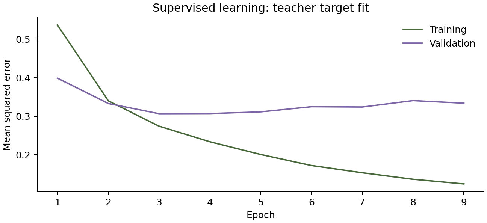
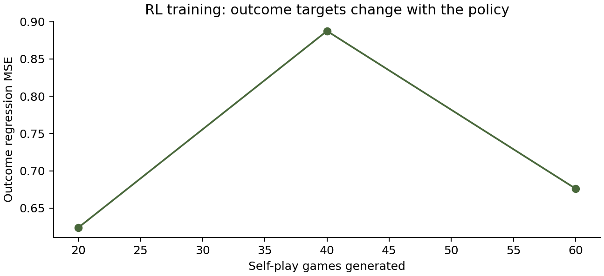
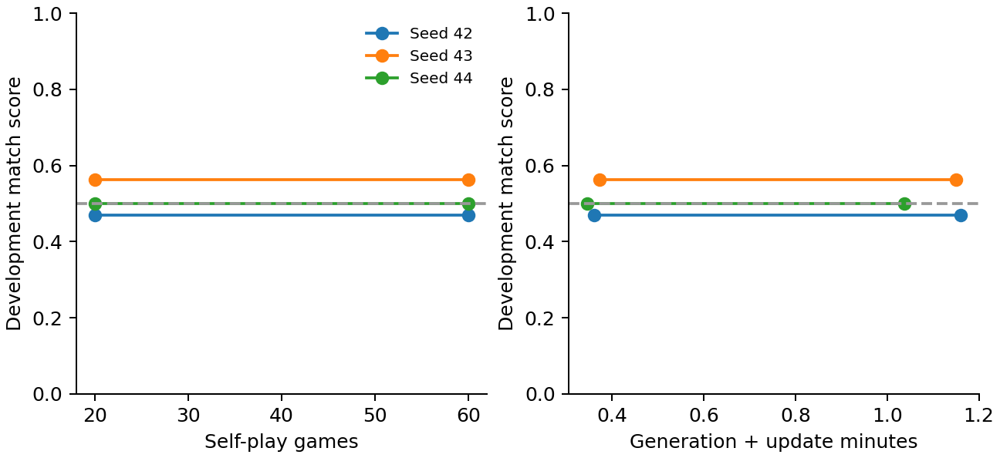
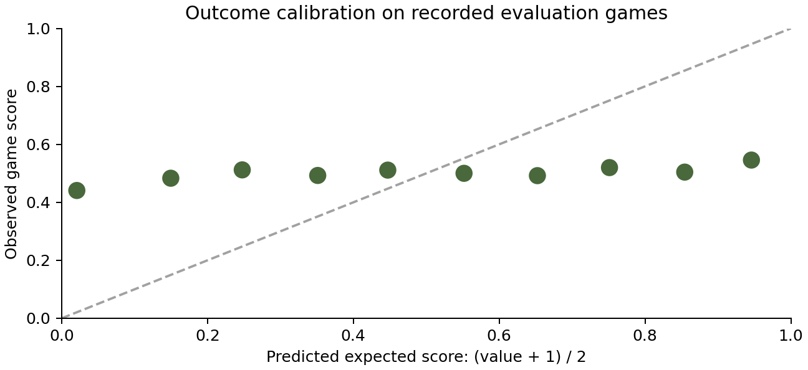

Download PDF · Machine-readable results
Does Monte Carlo self-play improve a supervised chess evaluator under a fixed search budget? This report separates training fit, playing performance, and practical runtime.
Bounded local study - three seeds, shallow search. 100,000 teacher-labeled positions; 60 self-play games per seed; 400 final games per seed. The search budget is 48 nodes, so conclusions apply only to this constrained setup.
A shared Python negamax search uses alpha-beta pruning, bounded quiescence, and history-aware transposition keys. python-chess supplies rules. A compact MLP evaluates positions; the web engine uses numerically checked NumPy inference. Stockfish is the teacher, not a hidden playing fallback.
Source games are partitioned before position sampling. Duplicate positions across splits and reserved opening source games are excluded. Stockfish WDL estimates produce side-to-move targets y=(wins-losses)/total. The evaluator minimizes mean squared error with AdamW and validation-based checkpoint selection.
The frozen actor generates a batch of self-play games. Completed outcomes provide z=+1 for a win, 0 for a draw, and -1 for a loss, from each position's side-to-move perspective. We minimize mean((v_theta(s)-z)^2), then regenerate games with the updated actor. Each completed game receives equal sampling weight. Truncated games are excluded; no teacher labels enter RL.
A frozen protocol identifies both checkpoint hashes, the reserved opening set, and search budgets. Each opening is played twice with colors swapped. Score=(wins+0.5*draws)/games. The 95% interval resamples whole opening pairs, not individual games. Move-cap adjudications are reported separately. Checkpoints may be selected on development matches only.
Best validation MSE: 0.306609. Epochs: 9. Device: cpu. Data hash: 3a1520b32d9c0c3dc09577f67d31f1bd2beb50b28e3efba4b81ff616e90c41a2.

9912 positions; MSE 0.300447; 0.438 ms per evaluation including features. Phase MSE: opening: 0.2629, middlegame: 0.3536, endgame: 0.2750.
Generated 60 games: 60 completed, 0 truncated. Generation took 68.9 seconds; updates took 0.05 seconds. Completed-game training does not by itself establish improvement.

400 games (200 opening pairs): 38 wins, 318 draws, 44 losses. Candidate score 49.2%; paired 95% interval [47.5%, 51.0%]. Result: inconclusive. 0 capped games. Uncapped-pair score: 0.4925; uncapped pairs: 200.
Seed 42: score 50.0%, interval [48.4%, 51.6%], 400 games. Seed 43: score 49.2%, interval [47.5%, 51.0%], 400 games. Seed 44: score 50.2%, interval [48.4%, 52.2%], 400 games. Mean score: 49.8%. Across-seed standard deviation: 0.0052. This is separate from within-run match uncertainty.

handcrafted: 53.1% across 16 games; interval [43.8%, 62.5%]. equal-time: 50.0% across 16 games; interval [31.2%, 68.8%]. stockfish: 0.0% across 16 games; interval [0.0%, 0.0%].
On 50 held-out puzzles rated at most 1600, the supervised evaluator solved 46 and the selected RL evaluator solved 45 at 1,000 nodes per move. This small diagnostic does not establish a tactical gain. In a post-study sample of 133 positions, 38 searches completed no full depth-one iteration at the 48-node budget. Mean completed depth was 0.91. Frequent fallback moves materially limit sensitivity to evaluator improvements.
The pilot showed pronounced overfitting: training loss fell while validation error rose. More supervised data reduced validation error, but shallow self-play generated mostly draws. RL's three final match scores remained near 50 percent. The fixed Stockfish reference won every secondary game; its zero-width empirical bootstrap interval is a resampling artifact, not certainty about future games. The optional continued-supervised control was not used: network updates were tiny compared with game generation, and the present study is limited to the declared primary treatment.
Only 60 self-play games per seed were used, versus the original 1,000-game target. Search was limited to 48 nodes per move. The 400-game result highlighted on the site belongs to the representative checkpoint selected on development matches. All three final seed results are reported separately. The historical source corpus and shallow search restrict generalization; results do not establish improvement at the demo search budget or against strong opponents. Draw-heavy experience and exclusion of truncated games can bias outcome learning. Move-cap sensitivity is reported. Supervised fitting preceded the first Git commit and records that fact. The RL and match protocols identify the committed implementation and immutable artifact hashes. No Elo rating, AlphaZero-scale capability, or general reinforcement-learning improvement is claimed.
Paid compute expenditure: C$0.00. Each run records configs, RNG seeds, dataset and checkpoint hashes, hardware, and Git state. Manifest SHA256: 5356f8a0e9955c2802229ae8b209cf50cbd6cbd219a97793a0d02c476e1be552. Main-study results must not be inferred from pilot evidence.
Lichess public database: https://database.lichess.org/ . Stockfish: https://github.com/official-stockfish/Stockfish . python-chess: https://python-chess.readthedocs.io/ . Monte Carlo policy evaluation follows the standard outcome-return formulation; the project is not an AlphaZero reproduction.
